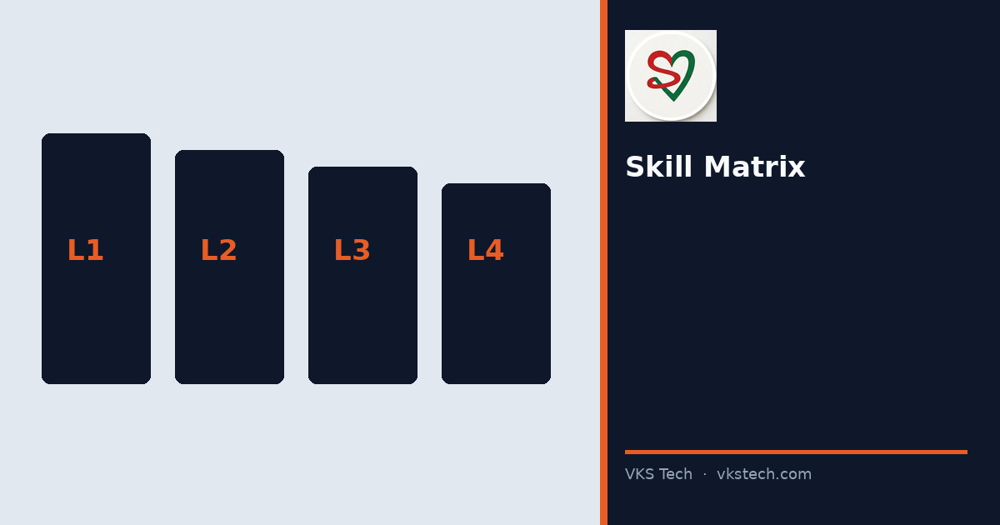
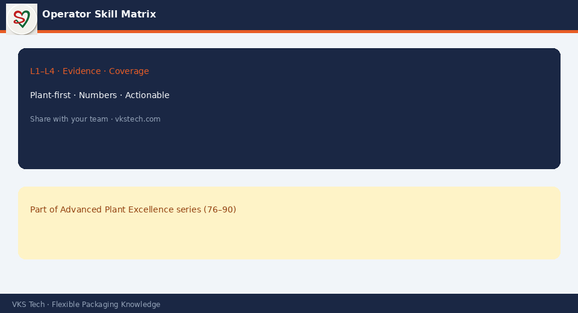

👷 A Skill Matrix Is Not an HR Form. It Is the Map That Tells You Who Can Run Which Machine on the Next Changeover or Night Shift.
📖 11-min read · People & Capability · Production + HR + PPC
When a key operator is on leave, when a new structure comes, or when the night shift needs a multi-skilled person, the first question is “Who can actually run this?” If the answer lives only in the supervisor’s head, the plant is exposed. A living skill matrix turns that knowledge into a visible, updatable tool that supports planning, training and risk reduction.
- List every critical machine / process (print, lam, slit, pouch, inspection)
- Define clear skill levels (e.g. 1 = can assist, 2 = can run under supervision, 3 = independent, 4 = can train)
- Update after every training or observed competence
- Use it for shift roster, leave planning and multi-skilling targets
- Review monthly — a stale matrix is worse than none

1. What a Useful Skill Matrix Contains
| Element | Why it matters |
|---|---|
| Machine / process list | Covers every bottleneck and critical skill |
| Clear level definitions | Removes “I think he can” ambiguity |
| Current rating per person | Shows coverage gaps at a glance |
| Last assessed date | Keeps the matrix alive |
| Training priority / plan | Links matrix to action |
2. How to Build and Keep It Alive
- Start with the critical machines only — do not boil the ocean.
- Define levels in one page that operators and supervisors both understand.
- Rate people based on observed performance, not seniority or self-claim.
- Update after every formal training and after a successful independent run.
- Review coverage every month: “If X is absent, can we still run Y?”
- Link multi-skilling targets to the matrix so training has a clear purpose.
3. Practical Uses Beyond HR
- Shift roster and leave approval — avoid single-point failures
- New structure trials — assign people who already have adjacent skills
- Changeover teams — know who can support fast changeovers
- Night and weekend coverage — visibility of who is truly capable
Start simple, keep it visible on the shop floor or in the daily meeting room, and review it as part of the monthly production review.
👷 स्किल मैट्रिक्स HR फॉर्म नहीं है। यह बताता है कि अगले चेंजओवर या नाइट शिफ्ट पर कौन कौन सी मशीन चला सकता है।
📖 11-मिनट पढ़ें · पीपल & कैपेबिलिटी · प्रोडक्शन + HR + PPC
जब मुख्य ऑपरेटर छुट्टी पर हो, नया स्ट्रक्चर आए या नाइट शिफ्ट को मल्टी-स्किल्ड व्यक्ति की जरूरत हो, पहला सवाल होता है “असल में यह कौन चला सकता है?” अगर जवाब सिर्फ सुपरवाइजर के दिमाग में है तो प्लांट जोखिम में है। जीवित स्किल मैट्रिक्स इस ज्ञान को दिखने योग्य और अपडेटेबल टूल बनाता है।
- हर क्रिटिकल मशीन/प्रोसेस लिस्ट करें
- स्पष्ट स्किल लेवल परिभाषित करें
- हर ट्रेनिंग या देखी गई क्षमता के बाद अपडेट करें
- शिफ्ट रोस्टर, लीव प्लानिंग और मल्टी-स्किलिंग के लिए उपयोग करें